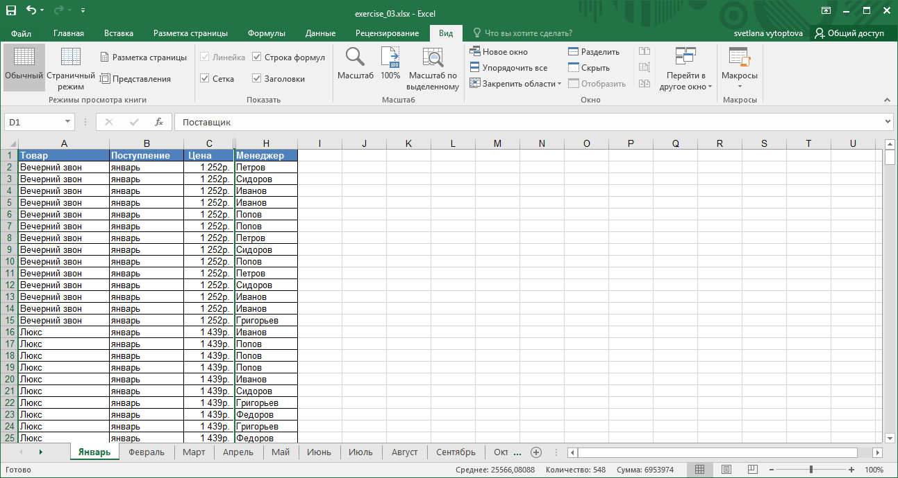

Лекция 2 || Лекция 3: 1 2 3 4 5 6 7 Упражнение || Лекция 4
Закрепление строк, столбцов и областей листа используется при просмотре больших таблиц для того, чтобы при прокрутке листа закрепленные строки и столбцы оставались в окне. Закреплять можно только строки, только столбцы или и строки, и столбцы одновременно.
Для закрепления областей листа используют кнопку Закрепить области группы Окно вкладки Вид.
Обычно требует закрепить верхнюю строку листа (названия столбцов таблицы) или первый столбец (названия строк таблицы).
Рис. 3.9. Закрепление областей листа
Для закрепления произвольной области следует выделить ячейку ниже закрепляемой строки (строк) и правее закрепляемого столбца (столбцов) и в меню (см. рис. 3.9) выбрать команду Закрепить области.
Например, при работе с таблицей на рис. 3.10 на листе закреплена область столбцов с наименованием товара, поступлением и ценой (столбцы A, B и C) и строки с названиями столбцов таблицы (строка 1).
Рис. 3.10. Таблица с закрепленной областью
Для отмены закрепления строк, столбцов или областей листа щелкните по кнопке Закрепить области, в меню выберите команду Снять закрепление областей.
Следует отметить, что одновременно разделить лист и закрепить области листа невозможно.
Временно ненужные для работы столбцы и строки листа можно скрыть.
Например, в таблице (рис. 3.11) для работы временно не нужны столбцы D:G.
Рис. 3.11. Таблица до скрытия столбцов
После скрытия этих столбцов таблица будет выглядеть так, как показано на рис. 3.12.
/p>
Рис. 3.12. Таблица после скрытия столбцов
При просмотре листа всегда можно обнаружить факт скрытия столбцов или строк по нарушению последовательности заголовков (см. рис. 3.12).
Для отображения скрытых столбцов можно выделить столбцы слева и справа от скрытых, щелкнуть правой кнопкой мыши по заголовку любого выделенного столбца и выбрать команду контекстного меню Показать. Аналогично можно показать и скрытые строки.
Для отображения всех скрытых столбцов или строк необходимо выделить все ячейки листа. Затем для отображения скрытых столбцов необходимо щелкнуть правой кнопкой мыши по заголовку любого столбца и выполнить команду контекстного меню Показать. А для отображения скрытых строк следует щелкнуть правой кнопкой мыши по заголовку любой строки и выбрать команду контекстного меню Показать.
Скрыть столбец можно также перетаскиванием влево его правой границы между заголовками столбцов до тех пор, пока ширина столбца не будет равна нулю. Аналогично для скрытия строк можно перетаскивать вверх нижнюю границу строки.